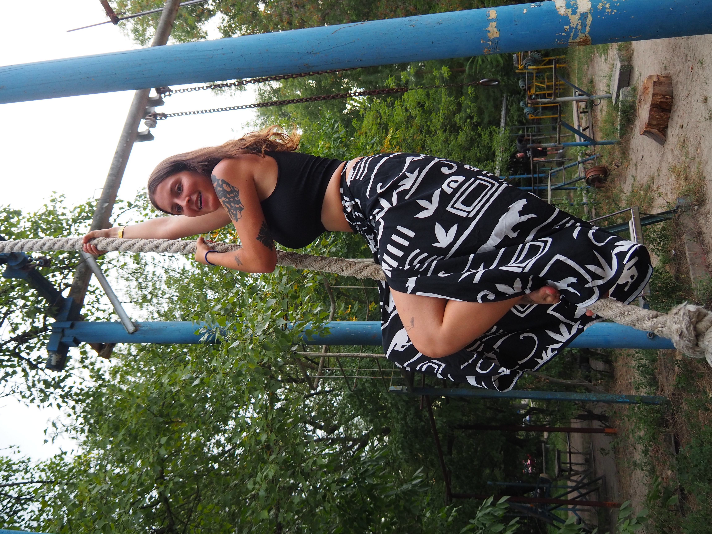

Ukraine, été 2024
En août 2024, je retourne en Ukraine en guerre pour la deuxième fois. Cette fois nous voyageons en groupe, avec ma femme Antonina, mes deux soeurs Alice et Coline, et le frere d'Antonina, Vova.
Cet article raconte notre voyage, avec beaucoup de photos, prises grace à l'appareil photo que Coline a amené. La plupart des photos ont été prises par Coline ou par moi.
 Monument de l'indépendance, Maïdane, Kyiv
Monument de l'indépendance, Maïdane, Kyiv
Partir en vacance en Ukraine pendant la guerre est une chose étrange, mais extrêmement importante pour nous.
Nous avons vu de la famille, des amis, qui habitent là-bas toute l'année, et qui n'ont pas de repos. Nous prenons un risque minime pour partager leur quotidien quelques jours, et garder un lien avec eux et l'Ukraine.
Ce voyage est aussi assez particulier, car comme Antonina est enceinte, nous ne sommes pas sur de pouvoir revenir en Ukraine tout les deux avant très longtemps, car c'est un voyage très compliqué à faire avec un nouveau né.
 Moi, Émile
Moi, Émile
 Ma femme Antonina
Ma femme Antonina
 Son frère Vova
Son frère Vova
 Ma soeur Alice
Ma soeur Alice
Ma soeur Coline
{kind=link}